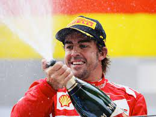

<html>
  <head>
    <meta charset="utf-8">
    <title>Fernando Alonso</title>
	<link rel="stylesheet" href="style/style.css">
  </head>
</html>

<h1>Fernando Alonso</h1>

<p>Surnommé « le Taureau des Asturies », Fernando Alonso a contribué à rendre populaire la F1 en Espagne.
 Considéré comme l'un des pilotes les plus talentueux du paddock, dans la lignée d'un Michael Schumacher, il est connu pour son tempérament de gagneur.</p>
 
  
  
  

  <body background="image/fondnoir.jpg">
  <background-attachment:center center;>